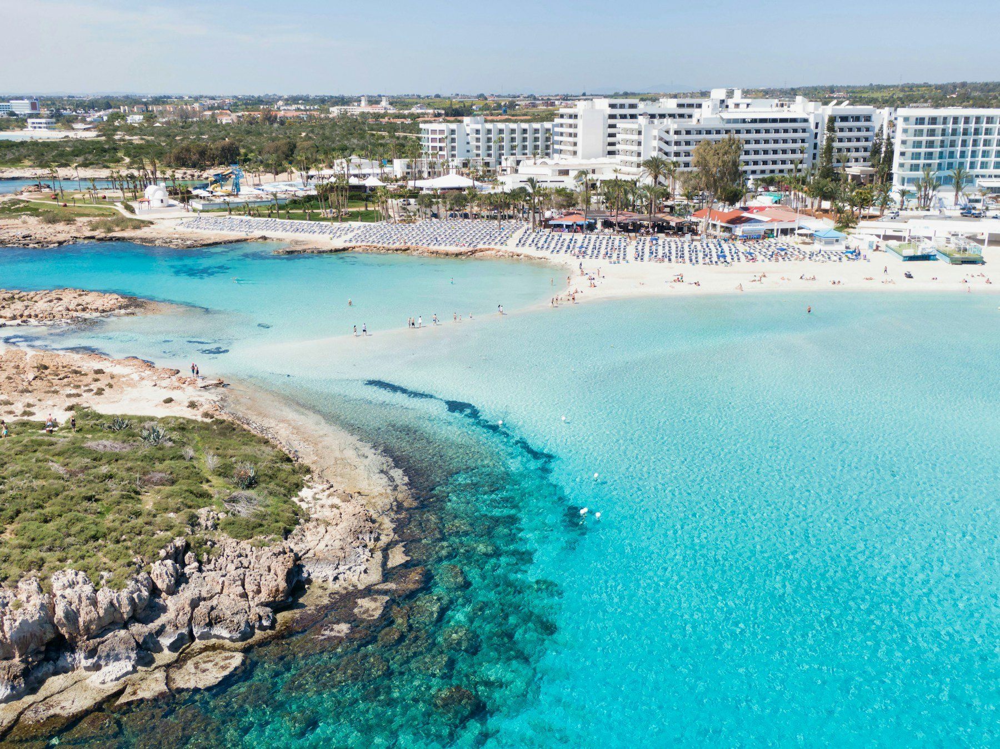
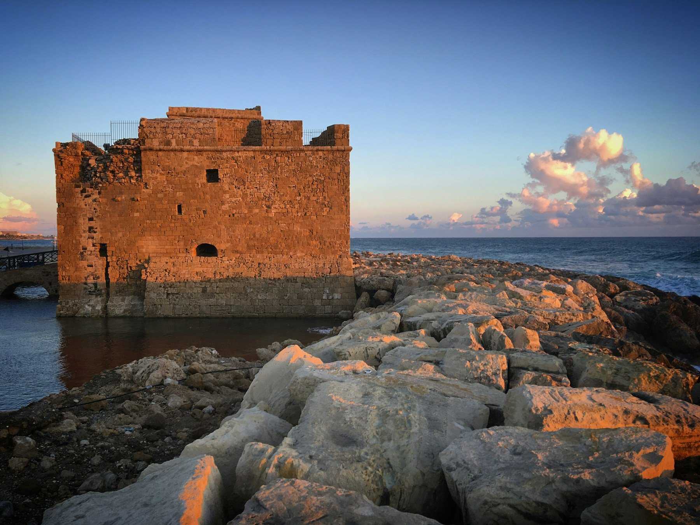
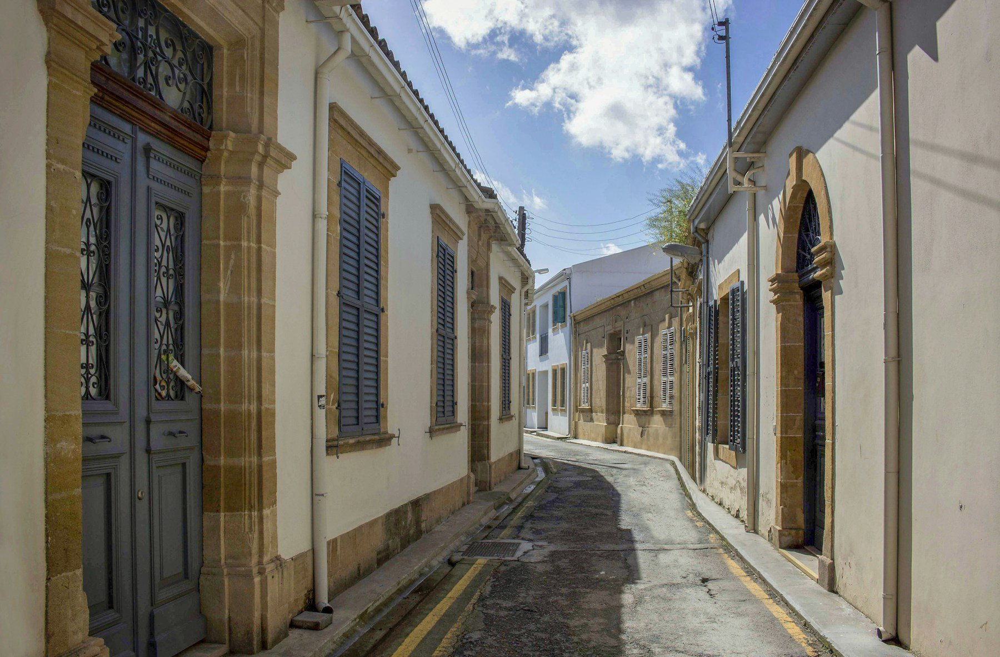
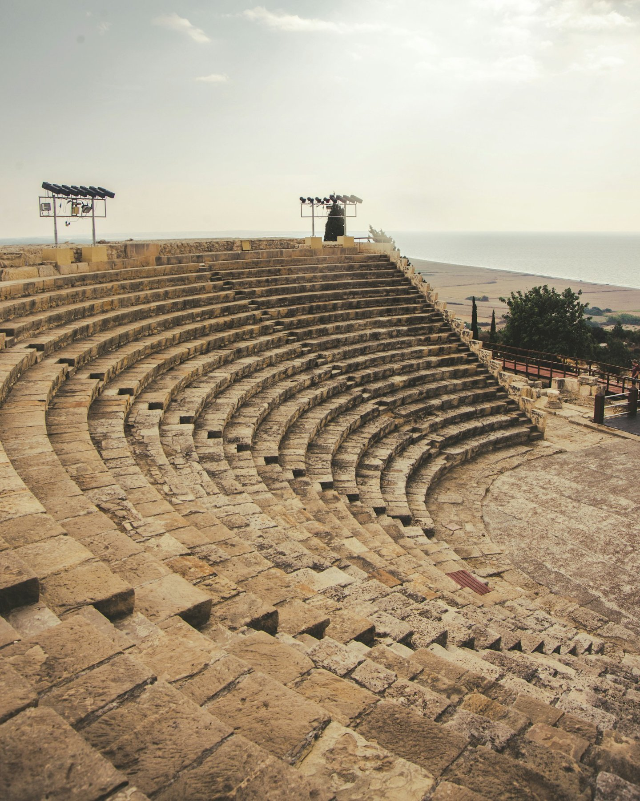
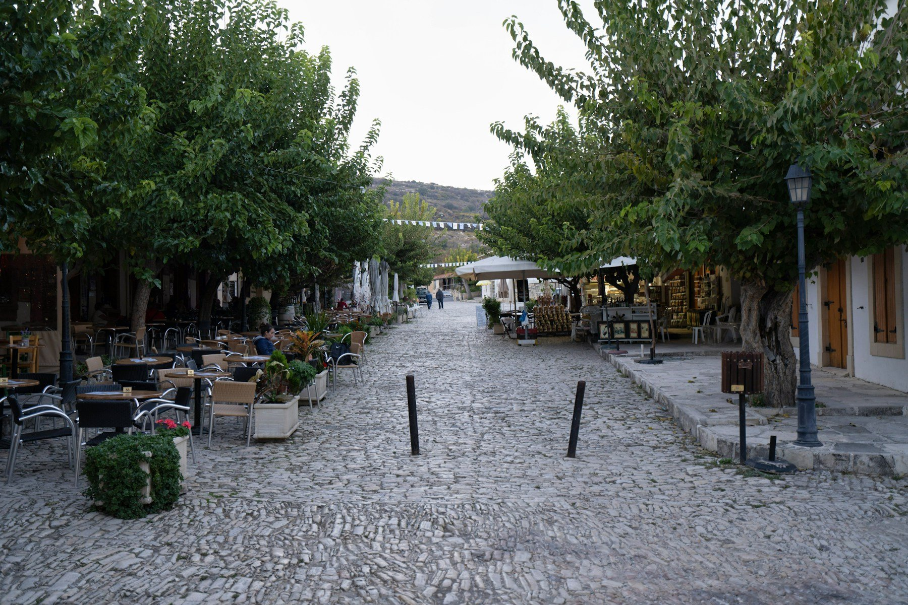
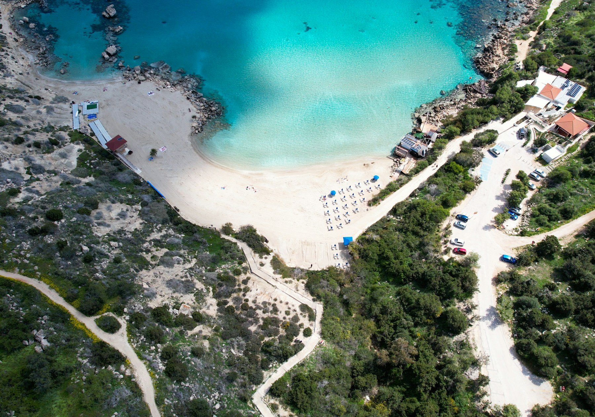

Mediterranean Shores
Enjoy clear water and sandy coves around Ayia Napa and Cape Greco.

Discover Cyprus
Sunlit shores, ancient sites and welcoming villages make this Mediterranean island a journey of many discoveries.
Explore CyprusAn Island to Explore
Cyprus invites you to slow down by the clear Mediterranean Sea and discover the stories behind its towns and historic sites. Wander through Paphos, explore Nicosia's old streets and stand among the ancient remains of Kourion.
Beyond the coast, traditional villages such as Omodos offer another side of the island. Combine relaxed beach days with culture, local food and scenic journeys designed around your interests.
Enjoy clear water and sandy coves around Ayia Napa and Cape Greco.
Explore old streets, coastal fortresses and remarkable ancient sites.
Take a different path inland to stone-paved squares and a gentler pace.
Places to Experience
01

02

03

04

05

06
Your Cyprus Journey
Tell us your dates, travel style and interests. Our team will prepare a personalized Cyprus proposal.